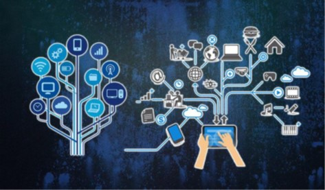
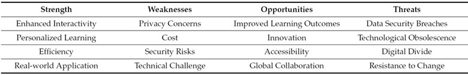

Internet of Things (IoT)-Based Teaching and Learning
1. ABSTRACT
The effect of technology has caused many institutions to intend to change their approach
to teaching and learning, resulting in the current model of teaching and learning being an active
collaborative and self-directed one. The connection between education and technology has received
attention as part of educational policy and practice. Debatable topics like how to use technology
in the classroom have therefore punctuated complaints about declining educational standards,
unemployed learners, duplicate curricula, and archaic institutional structure. In the framework
of information and communication technologies and societal growth, the Internet of Things (IoT)
is asserting its vital position. Institutions may improve learning outcomes with the use of the
Internet of Things by offering enhanced learning experiences, increasing operational effectiveness,
and collecting real-time, actionable insight into student performance. The current state of the Internet
of Educational Things (IoET) is examined from several educational perspectives in this article; a
few of them are highlighted, and both of their established and potential educational benefits are
discussed.
2. INTRODUCTION
The “God’s Architect” Antoni Gaud introduced a fluid building style in 19th-century
Spain by building them as three-dimensional scale models and shaping the details as he had
them in his head. His buildings’ expressive curves were not only functional load-bearing
elements but also beautiful disguises. The “Internet of Things”, also referred to as the
“Internet of Objects”, is a network of physical objects such as cars, appliances, and other
household items that are connected and can exchange data. These objects are implanted
with electronics, software, sensors, actuators, and connectivity. This type of system can
be summarily described as a network of physical devices, vehicles, home appliances, and
other items. Each object has an embedded computing system that makes it uniquely
identifiable, but they can all work together within the current Internet infrastructure. The
vision of the Internet of Things, according to Wigmore [2], has developed as a result of
the confluence of several technologies, including ubiquitous wireless connection, real-time
analytics, machine learning, commodity sensors, and embedded systems.
3. THEORETICAL CONCEPT
According to a common definition of the Internet of Things, it is a network of individually
addressed objects (devices) that use Internet technology to locate and communicate
with one another. The Internet of Things, one of the new paradigms that has emerged
as a result of the Internet’s recent rapid growth, is one of information and communication
technology’s hottest and most intriguing topics. Horizon Reports are regarded as
reliable studies that look at the most recent breakthroughs in education and educational
technology. In the context of substantial advancements in educational technology for higher
education, one of the technologies in the 2017 Horizon Report that is projected to enable
adaptation within 2–3 years is the Internet of Things paradigm. The concept and
principles of the Internet of Things need to be understood by students who are going to
use such technology in their professional lives over the coming years, as well as employees
who will always leap towards this technology.
The following research questions served as the guide for the multi-phased search, evaluation, and analyses of academic articles on the IoT for this study:
- What does the IoT (Internet of Things) technology for education mean?
- What are the advantages of education, according to publications from recognized research?
- What are the most recent developments in the Internet of Things (IoT) for education
and what challenges remain?

4. MODERN TRENDS OF IoT-BASED TEACHING AND LEARNING
The pace of schooling is accelerating due to the introduction of new technology and the
emergence of generations who are tech-aware. IoT-enabled education solutions, including
interactive displays, digital boards, language laboratories, tablets, and school security
software, are essential for meeting the demands of these children as well. By enabling
educational institutions to become Wi-Fi-enabled smart learning environments, the IoT
is revolutionizing the education sector. The whole integration, intercommunication, and
synchronization processes in modern smart systems can now be enabled via Wi-Fi and
sensor technologies. Increasing Internet accessibility at the community level has always
been difficult, but thanks to the IoT in education, we can alter classrooms even further and
make technology use easier even in rural places.
5. RESULTS AND DISCUSSION
This study made an effort to give a broad overview of current trends and unresolved issues in using IoT-based teaching and learning and its applications in diverse fields. Attempting
` to maintain a barrier between the academic setting and the most cutting-edge,contemporary technologies implies a significant loss for education in terms of communication and collaborative activities, as well as learning. More and more students refuse to use
paper documents in favor of smartphones, tablets, and computers, which provide them
access to the necessary information at their fingertips and the flexibility to learn at their
own pace. Due to the increased effectiveness and student-centeredness of instructional
techniques, this trend also benefits teachers. Teachers can concentrate on providing individualized
care and attention to each student while collaborating with them via IoT-connected
devices to modify their lessons and hands-on assignments. The IoT offers educational
institutions, teachers, and students a variety of chances in general.

6. CONCLUSION
The education sector also started to realize the value of technology and how essential
it is to the edtech industry. The IoT, or the Internet of Things, is a digital technology that
is quickly developing in the education sector. Furthermore, it is successfully improving
the current educational system. To maximize technology, the education sector is changing
IoT devices and related services. This system helps to make education more dynamic,
inclusive, and participatory. Furthermore, it enables interactive learning, guarantees the
security of the educational facilities, increases productivity, provides real-time learning
opportunities, enables close observation, etc. Additionally, providing your students with
IoT devices as teaching aids makes for a truly engaging learning environment. E-learning,
which has grown by 900% since 2000, is the sector of the education business with the
fastest growth.
7. REFERENCES
- . Letting, N.; Mwikya, J. Internet of Things (IoT) and Quality of Higher Education in Kenya; a Literature Review Internet of Things
(IoT) and Quality of Higher Education in Kenya: A Literature Review. Available online: https://core.ac.uk/download/pdf/2868
94462.pdf (accessed on 13 February 2023).
- What Is a Thing (in the Internet of Things)?—Definition from WhatIs.com. IoT Agenda. Available online: https://www.techtarget.
com/iotagenda/definition/thing-in-the-Internet-of-Things (accessed on 21 April 2023).
- Khan, M.Z.; Alhazmi, O.H.; Javed, M.A.; Ghandorh, H.; Aloufi, K.S. Reliable Internet of Things: Challenges and future trends.
Electronics 2021, 10, 2377.
- Almufarreh, A.; Arshad, M. Promising Emerging Technologies for Teaching and Learning: Recent Developments and Future
Challenges. Sustainability 2023, 15, 6917. [CrossRef]
- Citroni, R.; Di Paolo, F.; Livreri, P. Evaluation of an optical energy harvester for SHM application. AEU-Int. J. Electron. Commun.
2019, 111, 152918.
- Ning, H.; Hu, S. Technology Classification, Industry, and Education for Future Internet of Things. Int. J. Commun. Syst. 2012,
25, 1230–1241. [CrossRef]
- Vermesan, O.; Friess, P. Internet of Things: Converging Technologies for Smart Environments and Integrated Ecosystems; River Publishers:
Aalborg, Denmark, 2013.
Addendum
Short description of The HTML tags that i used in above code
<article>- Defines a self-contained piece of content that could stand alone or be syndicated.
<h1>- Represents the highest level heading in a document, important for SEO and structure.
<h2>- Denotes the second level of heading, useful for subheadings to structure content hierarchically.
<p>- Marks a paragraph of text, the basic block of web content.
<img>- Embeds an image into the HTML page.
<ol>- Creates an ordered list, where each item is automatically numbered.
<ul>-Generates an unordered list, typically displayed with bullet points.
<li>- Represents a list item, used within <ol> and <ul> elements.
<b>- Makes text bold without conveying any special importance or urgency.
<br>- Inserts a line break, used for adjusting the flow of text without starting a new paragraph.
<hr>- Places a horizontal rule/line, often used for thematic breaks in content.